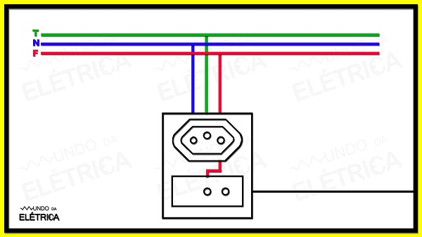
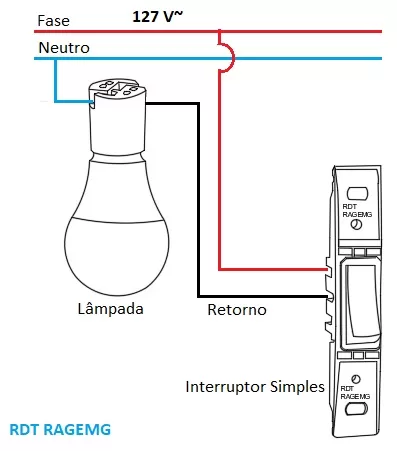

Na rede que vem do poste temos dois fios positivo com energia e neutro que está ligado no pé do
poste, as vezes também chamado de terra

na ligação de qualquer objeto elétrico com um interruptor temos neutro ligamos direto no objeto e o
positivo cortamos-o e adicionamos o interruptor
